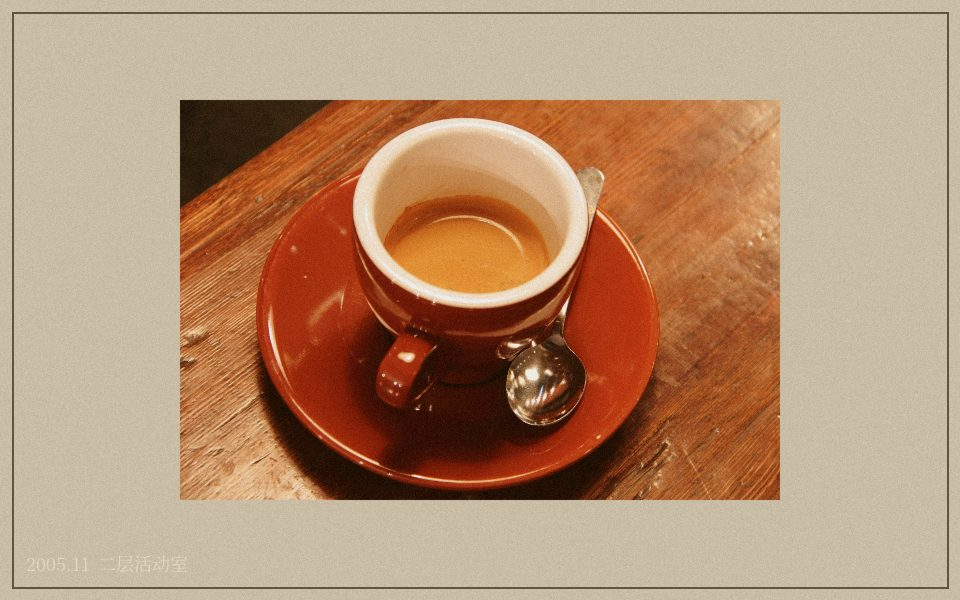

本站首页
五还齐备，故人归席
人离之后，形、声、息、名、物仍有所留。
明真静修社以五还之法，陪伴难舍者整理旧念，安顿余生。

2005年11月二层活动室茶水桌照片。照片背后压着当晚初访登记节页，原卷未列成员姓名。
本月来访安排
周三晚为初访交流；周六下午为归席共修。第一次来访可旁听，不安排住宿。
周三晚为初访交流；周六下午为归席共修。第一次来访可旁听，不安排住宿。
近期公开事项
五月以来初访人数较多，晚间交流改为两组进行。第一次来访者仍按原办法，只登记姓氏与联系电话，不要求填写逝者信息。值日人员会先说明活动室、茶水间和休息位置，愿意说话的人再留下。
本社不举办所谓“通灵”“招魂”活动，也不接受以验证亡者是否存在为目的的咨询。我们只处理人离开以后还留在生活里的东西：照片、声音、房间、气味、名字和物件。
归席静修近年人数增加。床位有限，连续住宿者应由本人提出申请。家属如有异议，可通过家属留言页说明，不建议直接到活动室争执。
值日记录节选
4月12日：热水壶更换。4月19日：三楼西侧窗帘清洗。4月27日：有来访者误带整箱旧衣物，已劝其先带回，只留一件。5月3日：还耳交流结束后有人失眠，当晚未继续练习。
公开值日便笺
| 日期 | 事项 |
|---|---|
| 05-08 | 二楼窗帘拆洗，下午活动移到里间。 |
| 05-12 | 有人拿错黑色折叠伞，前台暂放一把同款，请自行确认伞柄贴纸。 |
| 05-17 | 白瓷杯补六只，旧杯有缺口的不要再用。 |
| 05-24 | 周六下午楼下修水管，洗手间可能停水一小时。 |
来访物品如需暂存，请在前台写姓名和日期；本站不负责长期保管贵重物品。
本月前台登记
5月共有17名初访者，其中6人只旁听，没有登记五还项目。前台借出访客牌19次，收回19次。有人把雨伞放在楼梯口，第二天才来取。
三层住宿区本月两次报修：西窗漏风、热水器温度不稳。药品冰箱仍只放需要冷藏的个人药物，不存放食物。
活动室借用本
| 日期 | 登记 |
|---|---|
| 04-06 | 下午借给两名家属整理相册，借剪刀一把、胶带一卷，17:10归还。 |
| 04-13 | 周三交流后留下三把椅子未归位。第二天早班整理。 |
| 04-21 | 里间墙角渗水，桌子向外挪半米。当天不安排物品整理。 |
| 05-05 | 来访者带蛋糕，前台借小刀一把。剩余半盒放茶水间，次日清理。 |
| 05-19 | 一只深蓝色布袋遗留在靠窗椅下，内为普通衣物，已电话通知本人。 |
借用本与修持登记分册保存。桌椅、杯子、雨伞和失物通常不进入成员档案。